Distância Euclidiama vs Similaridade de Cossenos
Indo direto ao ponto a principal diferença entre os cálculos é que enquanto na distância euclidiana é como se fizéssemos uma medição com uma régua entre 2 pontos, na similaridade de cossenos analisamos a distância angular entre 2 pontos a partir da origem, isso ficará mais claro no gráfico perto do final desta anotação.
Comparando resultados
Primeiro vamos implementar cada cálculo e depois uma função que receba uma matriz, normalize os dados, e indike os "k" pontos mais próximos a alguma coordenada que a gente escolher. Como usaremos em outras anotações, escrevi mais linhas do que um código simples e didático deveria ter:
Visualizando a diferença de resultados entre as medições, gerei esse gráfico abaixo:
{kind=link}
explicando: os pontos vermelhos representam os pontos mais próximos desse ponto amarelo cortado por uma seta são os pontos mais próximos considerando a distância euclidiana, os pontos azuis é pela similaridade de cossenos e os roxos são os que as duas métricas coincidem ao listar os mais próximos, a seta indica a inclinação do ponto amarelo em relação a origem, e é isso que a similaridade de cossenos leva em consideração, perceba que um dos pontos azuis ficou bem distante mas projetando a seta vemos que se mantém mais próximo ao ângulo do ponto amarelo que o ponto vemelho.
O motivo de preferirmos usar a similaridade de cossenos a usar distância euclidiana ou outras métricas para medir distâncias é que quando trabalhamos com NLP e ainda mais quando fazemos uma redução de dimensionalidade (onde ficou claro que há rotação e distorção) os ângulos ficam mais bem preservados que as distâncias.
obs: É muito comum a similaridade é calculada com 1 passo a mais do que o demonstrado aqui, a distância angular é dada por:
Outras vezes apenas fazem 1-similaridade.
Comentários
Comments powered by Disqus